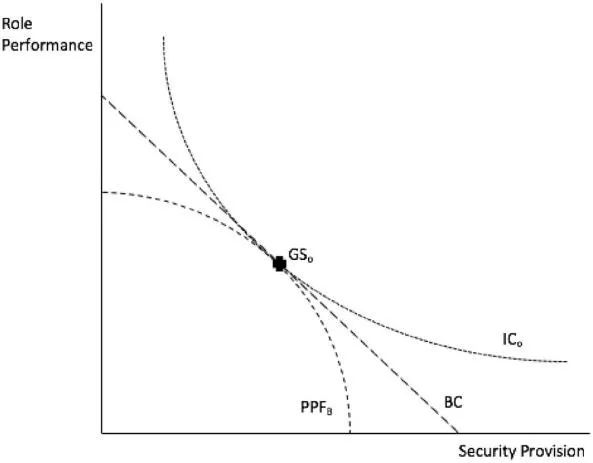
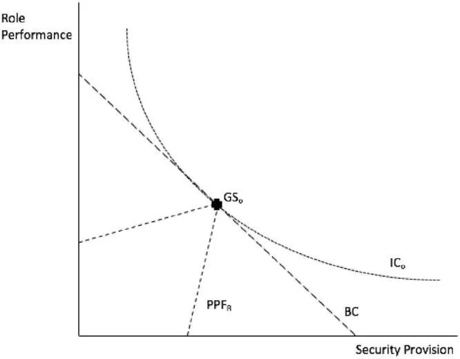
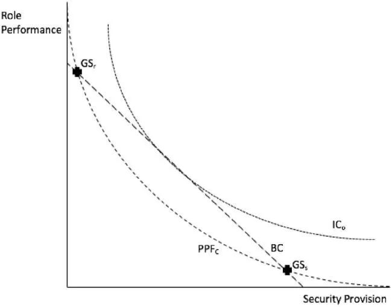

收录于合集

角色扮演、现实政治和“大国风范”：
大战略中生存和社会表现的逻辑区别
作者： David Blagden，埃克斯特大学战略与安全研究所（Strategy and Security Institute，简称SSI）的政治系国际安全高级讲师，曾任剑桥大学达尔文学院国际政治系研究员。
编译： 杨佳霖（国政学人编译员，南京大学中美文化研究中心国际政治专业硕士研究生）
来源： Blagden D. Roleplay, realpolitik and ‘great powerness’: the logical distinction between survival and social performance in grand strategy. European Journal of International Relations. 2021;27(4): 1162-1192. doi:10.1177/13540661211048776
导读
国家间关系和国家利益分析往往既强调其实力势位，也强调群体的集体信念和承认作用。国际体系结构的调整与变化，使得“角色理论”被带入国际关系中。
本文则通过以下三个案例组合——美国/中国、英国/法国和德国/日本——的战略实践考察，旨在说明国家（特别是大国）角色的生成和激励结构是独立于现实主义路径之外，并可能偏离现实主义基线的。
作者指出，“角色本身创造国家利益，国家的利益不能超出特定角色所构建的利益”的建构主义路径不能为行为体角色身份的习得与进化提供有效且自洽的机制，现实政治下，角色只是若干利益中的一个从属利益，而 “大国”作为系统排序单位中的特殊角色，正揭示了国家战略目的之间的关键断层线，以及这两个目的之间的不相容性 。无论是将“大国”作为一个特殊的品类，强调其维护秩序的责任，还是将现实主义的生存假设编码为一种角色行为，都存在解释力的不足。 作者进而将角色扮演动机定位为新古典现实主义中大战略“偏差”的来源，并通过生产可能性曲线（production possibilities frontier，简称PPF），描述角色扮演与现实政治之间互补、互相强化和互相竞争的不同可能 。
本文为如何归纳问题并提出推论，以及国家行为激励结构的类型分析提供了值得学习的范例，其中，PPF曲线所描绘的目标分异，也突破了静态的固有角色功能差异或物质实力构成国际体系位置结构的思维模式。 但一定程度上，本文也面临变量控制、案例解读及选择的问题 。例如，对于德国、日本的“平民角色”身份凸显，作者将其理解为限制了国家安全利益的发展，一定程度上忽略了关系网络的互动过程和历史演进。作者在结论部分也提出，角色扮演惯性的维持和转变、角色偏好履行成本的效用函数组成部分和权重的问题仍然有待解决。此外，仍需考虑以大国为主体的解释模型，是否适用于中等国家（例如以“角色主义”立场为外交目标的加拿大）在社会结构中的位置与角色的关系解读。
编译
01
引言
无政府体系下的国家生存需要，是现实主义国际关系理论论述的起点和假定。本文则指出，结构现实主义将相对能力分布置于国家实质之上，忽略了单元层面的变量，因而，本文提出了一个派生于角色理论的、针对大战略“偏差”的新古典现实主义解释： 角色扮演所要求的激励结构，可能偏离现实主义的基线，即国家生存前景最大化，从而产生战略偏差。
作者指出：角色扮演和现实政治很多时候是一致的，满足特定的社会行为预期也许可以改善国家的生存前景，在世界政治中扮演一个特定的规范性角色，有助于国家安全。然而，角色扮演和现实政治有时候会朝着不同的方向发展——满足一系列社会行为期望反而会削弱国家安全，使一国长期生存的前景复杂化。
本文除采用以单元层面的变量来解释国家对外战略的新古典现实主义理论，还特别引入“大国”的类型学分析并通过美国/中国、英国/法国和德国/日本的案例组合说明这一方向性区别： “大国”在角色扮演意义上和现实政治意义上存在不同的能力和行为门槛要求，二者不能互相易位。 因此，保障存续的物质结构要求不能简单地被视为角色的一部分，也就不能以意识形态动机不需要与国家安全艰难权衡为由开脱。 角色扮演和现实政治之间的张力于此得到最大的呈现。
本文首先比较了社会建构主义和结构现实主义对“大国”的理解。其次，作者解释了两种路径在逻辑上取反的原因。第三，文章将角色扮演的动机定位为新古典现实主义中大战略“偏差”的来源，并指出角色扮演和现实政治是互补的还是竞争的，取决于它们的“生产”是否相互强化。最后，作者提出了本文观点对理论和政策的影响。
02
社会建构与物质条件：何以“大国”？
“角色”是指行为体在特定社会情境中的行为所附带的一系列期望，与“身份”和“地位”有密切联系。 角色来源于身份，区别在于随之而来的行为预期；角色与地位相关，但地位追求相对位置或承认，角色则关注施动性的扮演作用。 有人认为国家有寻求某些角色的欲望；另有人强调角色需要主体间对被“扮演”的“角色”的认可。 总之，社会建构主义的重要贡献以及本文的突出重点在于，人们可以从由关于适当行为的社会观念所产生的国际行为期望的满足中——即国家在世界事务中的角色扮演中——获得效用（包括自尊、肯定、认知上的舒适、国内/国际上的赞誉，以及类似的“物品”），而“大国”角色的特殊性更在于：如果一个国家能够根据其被期望的秩序角色进行表现，它才能被其它国家视为“大国”。
与结构现实主义的物质编码不同，英国学派主张将“大国”作为一个特殊的品类，强调其维护“秩序”的责任。建构主义接受并扩展了这一方法，认为即使在国际无政府状态下，社会对国家间等级制度、合法行为和主体间承认的理解也可能塑造国际行为，限定物质权力的行使。 这些以角色为基础的“大国”概念，认为角色本身创造国家利益，国家的利益不能超出特定角色所构建的利益。但是对现实主义而言，角色只是若干利益中的一个从属利益。国家如何处理角色扮演和以追求生存和安全为首要目标的现实政治之间的张力，成为本文的焦点。
本文认为，当国际体系的压力相对较低时，国家能自由地扮演所偏好的社会角色。面对较少的对手时，安全成本与意识形态偏好下感知的政治利益能够有所协调（例如美国单极体系下西方国家的处境） 。事实上，国家（尤其是拥核国家）如今很少会因为被侵略而灭国，但 这并不意味着，国家可以自由地（甚至是大胆地）在不损害安全的情况下履行他们的角色偏好 。任何以角色为动机的选择，如果导致拥有（或有能力制造）核武器的国家之间产生再微小的额外升级风险，都是对国家安全的威胁，而国家理应希望能够独立满足自身的军事安全要求。
是履行国际社会角色，还是维护以持续生存为首要的物质支撑的等级制，这是一个关于什么构成国家利益的问题。而 “大国”作为系统排序单位中的特殊角色，恰好揭示了国家两个目的之间的关键断层线，以及这两个目的之间的不相容性 。因此，本文以大国、前大国和有意识地追求“平民”角色的德、日国家作为论述的主要案例。
03
主体间性还是客观性？
——角色扮演与现实政治下的“大国风范”
本节回应了一个潜在的争论，即国家战略中，角色扮演和现实政治可以在多大程度上共存 。有学者试图将生存偏好整合进角色扮演中，将现实主义的生存假设编码为一种角色行为，现实主义思想的诸多变种也都承认行为动机超越了单纯的存续。此外，表演性的期望往往也是生存压力的结果，并且能促进国家的生存。然而，本文认为， 将角色扮演与相对权力混为一谈的做法，在理论上是不成立的 ，原因有以下四点。
首先，将大国定义为履行国际社会“责任”并拥有显著军事能力的国家，为“大国”设定行为门槛，则否定了国际的、结构性的权力关系，无法解释国际体系的变化 ，因为那些试图推翻现行权力平衡的国家会被定义为放弃“大国地位”，也就无法作为有效的分析工具来使用——如果第二次世界大战不是“大国战争”，因为德国或日本的行为不是“大”国“应该”的，那么这个定义还能涵盖什么样的大国之间的竞争或冲突呢？
其次，如果将“大国”的社会行为侧重理解为支持国际秩序的社会责任（和相应的手段），而不是真正确保国家免受任何潜在侵略者的侵害，无疑对军事能力和相对权力的关系性阈值提出了过低的要求 。事实上，角色扮演所期望的是生存作为秩序维护者的副产品；现实政治则期望维护国际秩序的军事能力是强大到足以独立捍卫自己生存要求的副产品。这两种说法都是一种有用的概念化，但它们必然是不能同义的。
第三，讨论国家的“能力”而不考虑它们必须“有能力”完成哪些具体任务是没有意义的，生存要求不能只是嵌入角色的第一序列，而需要与其他国家互相比较，才能满足“大国”避免失败的体系标准。
第四，也是最根本的一点，认为“大国地位既基于对国际社会角色的主体间认可，又基于某些物质前提的满足”的这一论点是自相矛盾的：因为这会使人误以为，一个国家即使没有达到某些必要的物质能力门槛，也能因为伙伴国家的认可而成为一个大国。
角色-承认和能力- 门槛方法的内部不相容性可以通过一个简短的反事实来说明：没有人仍然认为当代的荷兰是一个大国。然而，为什么荷兰不被认为是一个大国呢？作者认为，现有的基于角色的解释是循环论证的；荷兰不再被视为大国——尽管有积极行动、力量投射部署、同盟关系等属性——只是因为它不再被视为大国了。构成大国地位的要么是角色，要么是能力，这两者不可能完全相同。
因此，如果仅仅把存续定义为角色的表现形式，为什么国家的行为方式不只是受存续欲望的支配，而是受社会期望或适当行为规则的支配——就有可能被归入不可证伪的事后归因标签。所以，角色扮演和现实政治可能是互补的，但它们必然是不相同的 。角色扮演和现实政治拥有独立的激励结构，能够将国家拉向不同的方向，从而阐明了大国的战略姿态中所应注意的内在冲突。
04
角色扮演和（新古典）现实主义：
战略“偏差”的解释
大战略“偏差”包括“平衡不足”（under-balancing），对抗行为产生或加剧相互敌意的“过度平衡”（over- balancing），关注琐碎的问题而忽视更具严重风险的“错误平衡”（misplaced balancing），以及将资源浪费在昂贵或无法实现的海外政治转型运动上的修正主义“反平衡”（anti-balancing）。 本文认为，这些“偏差”的动机可能是国内意识形态的角色概念，因此可以用角色扮演与现实政治的内在冲突来解释。

图 1
图1描述了角色扮演与现实政治之间的互补、平衡，即凹面生产可能性曲线。BC代表一个国家的预算约束，即可用于执行大战略的资源数量。ICo代表实现安全优化的冷漠曲线，即国家居民对安全提供和角色表现的满意程度相当。PPFB表示，边界向下，角色表现构成安全增加的成本，但“生产”更多的角色并不意味着安全的等量减少。PPF曲线的最东北端是这两者的某种充分平衡的结合，即效用最大化，所谓最佳大战略（GSo）就是PPFB触及国家预算约束，达到冷漠曲线最高值的点。

图 2
图2描述了角色扮演和现实政治之间的互相强化，例如西德采用非军事化的“平民”角色对于1945年后的欧洲稳定确实是必要的，最终改善了德国的安全。

图 3
图3则表明，如果为追求角色实现（GSr）而做出的选择会削弱国家安全（GSs），（反之亦然），那么在相互竞争的产出之间就会出现凸形的PPF。
05
行动中的“偏差”：
当代大国战略中的角色扮演与现实政治
本节分析了角色与现实政治的分歧可能引发的战略偏差。 权力转移中，扩张性的角色概念可能使国家无视相对衰落所激励的审慎收缩，而继续其浪抛权力的周边承诺。反对抗的角色动机也可能会阻碍富裕但武装不足的大国的适当内部平衡，产生相反类型的战略偏差。
作者认为，美国过去20年在中东等地区有升级风险的军事行为，是想象中的“为世界排序”的角色表现冲动的结果，既破坏了国内的凝聚力和战略有效性，更有违现实政治对于国家能力管理、避免无益的升级、缩减周边承诺的要求 。而英法这样缺乏作为体系一极的手段和意愿的“剩余”大国更加彰显了角色扮演和现实政治之间的张力，例如法国海军仅运营着一艘航空母舰，这满足了在欧洲- 大西洋区域内外领导秩序执行的表演性角色，但考虑到机会成本和安全需要，为数仅一艘航母的其实是一个净负债。类似地，在财政紧张的情况下，英国的战略同样被拉向矛盾的方向。德、日等有意识地追求“平民”角色的国家与英法模式稍有不同，无政府体系的生存需要使其面临战略“正常化”的压力，但平民角色这一意识形态依附使其陷入影响安全的欠行动主义，因而体现了“平衡不足”的现实案例。
06
结论
本文主张角色扮演和现实政治不能保持永久的、良性的一致：国家拥有一定的目的感也许可以促进战略形成的连贯性，使国家生存前景最终得到改善，但二者仍然是分析上不同、逻辑上独立的激励结构。安全最大化战略并不总是自明或清晰的，因为这一“现实主义基线”在实践中可能并不容易操作，但关键在于它并不只是社会偏好满足的同义词 。如果政策制定者和学者都能更清楚地了解国家行为的不同激励类型以及这些动机之间可能存在的权衡，他们将能更好地做出战略选择。
作者最后指出了未来研究的几个可能的途径。首先，角色表现往往产生于安全需要优化时的良性重组，但即使在战略环境发生变化，角色表现和现实政治产生分歧时，角色仍然有其惯性，那么何种“冲击”才是促使其重组的必要/充分条件？第二，国家为了维护其首选角色，固然能够容忍一定的履行成本，那么这一领域的特定效用函数的组成部分和权重应是如何分布？第三，有哪些其他类型的角色与安全冲突的国家，可以从该方法的应用中受益？最后， 角色扮演或现实政治是竞争性的还是互补性的，最终取决于其PPF曲率（即角色的生成是加强还是削弱安全），然而，这种PPF并不完全是外生的；它们是由国家自己的选择决定的。因此， 国家如何选择其目的才能确保追求符合社会偏好的安全最优政策，满足角色表现雄心的同时不损害其净安全？最后一个问题的回答将决定许多国家在单极性减弱时的大战略选择。
词汇积累
角色扮演 roleplay
生产可能性边界
production possibilities frontier
审校 | 胡富钦 董诗
排版 | 彭凌懿 廉梦瑶
文章观点不代表本平台观点，本平台评译分享的文章均出于专业学习之用, 不以任何盈利为目的，内容主要呈现对原文的介绍，原文内容请通过各高校购买的数据库自行下载。